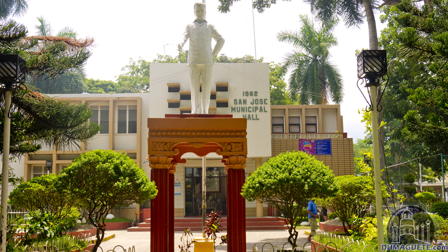
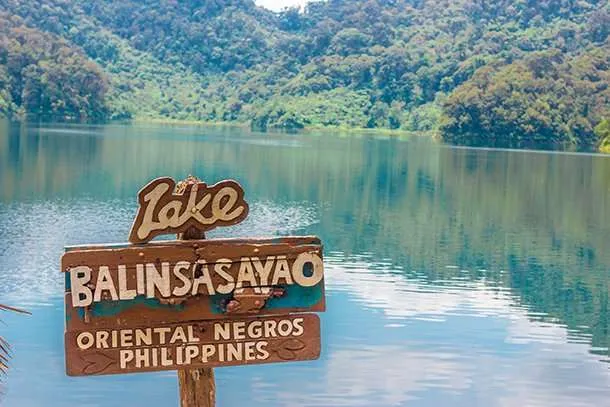

Top Attractions

San Jose Municipal Hall
The San Jose Municipal Hall is located in the Poblacion area of San Jose, Negros Oriental. The Municipal Government of San Jose provides contact details on its official website.

Attraction 1
The park protects Lake Balinsasayao and Lake Danao, two deep crater lakes separated by a narrow mountain ridge, and features hiking trails and wildlife.

Sea Wall View
A coastal boardwalk perfect for relaxing, walking, and enjoying the view of the sea.